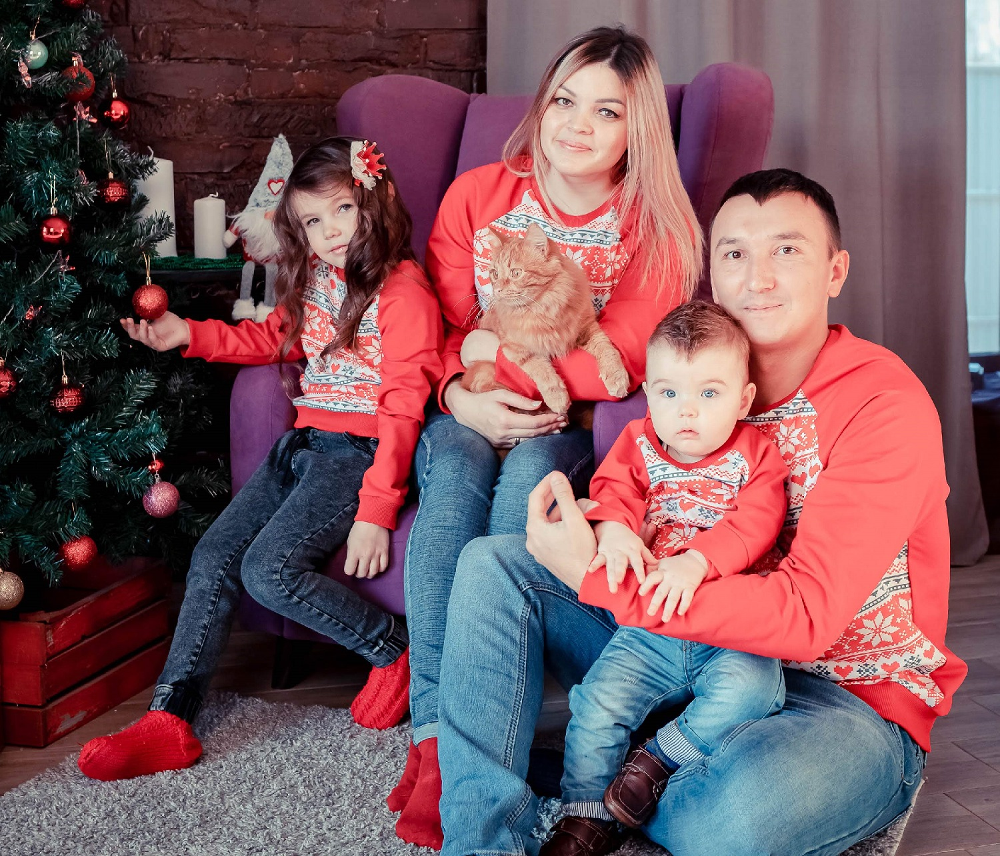
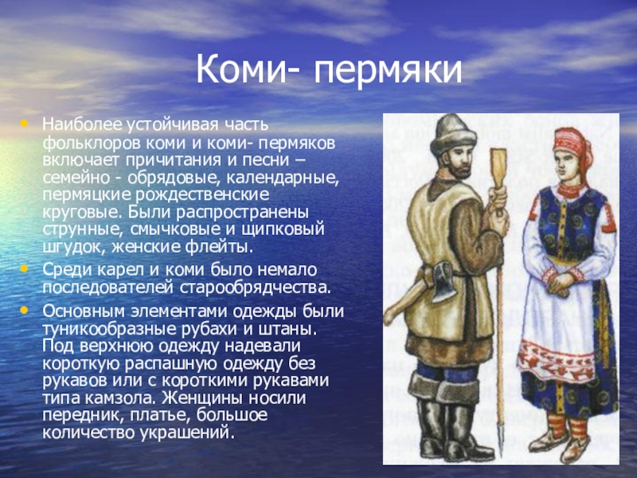

Мехоношина Елена Ивановна
Немножко обо мне
Это я и моя семья. Я работаю в Администрации в своем родном городе. Мой город Кудымкар.
Это в Пермском крае, в Коми-Пермяцком округе. Наш округ еще называют краем ведьм и колдунов. Здесь проживают Коми-Пермяки. О нас недавно сняли сериал по ТНТ, называется "Территория". У нас есть свой язык Коми-Пермяцкий, свои традиции и обычаи. Мы входит в Фино-Угорскую группу.О Коми-Пермяках
Ко́ми-пермяки́ или пермяки; (самоназвание — коми морт, коми отир, коми-пермяккез) — народ финно-угорской группы, проживающий в России. До 1920-х гг. называли себя пермичами, пермянами. В настоящее время используется этноним коми-пермяки. На реках Иньва и Нердва (Кудымкарский и Юсьвинский районы Пермского края) — иньвенские коми-пермяки. Исторически занимались охотой и рыболовством, пашенным земледелием, животноводством. В настоящее время основные занятия коми-пермяков — сельское хозяйство и работа в лесной промышленности.